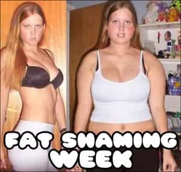
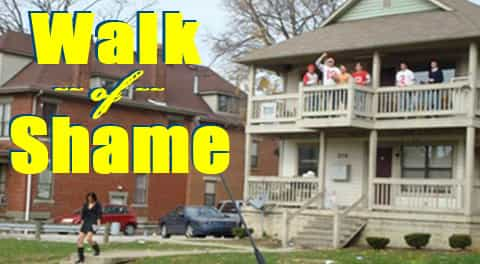
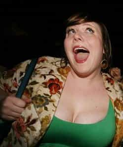
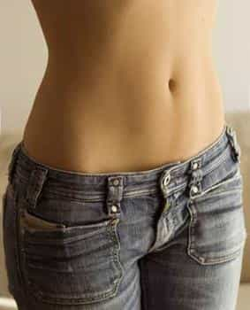
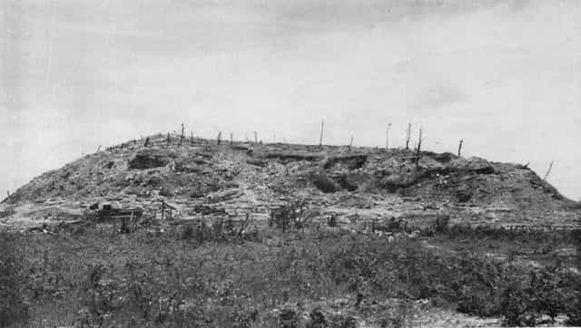
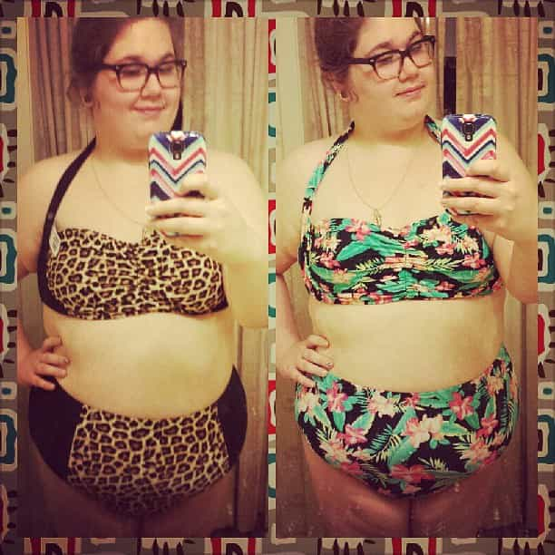
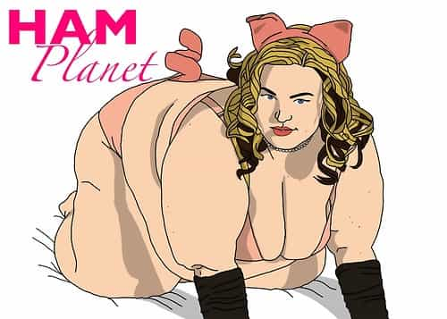

< < < Back
From Fit To Fat – Return Of Kings

Ashley grew up in a small suburb of a small city. Her family is upper middle class. Ashley never wanted for anything; her first day at university she showed up in a car more expensive then half those in the staff parking lot. For the first 18 years of her life Ashley was on top of the world; while not facially stunning she was pleasant enough to the eye to be considered cute. She was big into volleyball since grade school, and all that running and bouncing in tight spandex had put quite a fit body on her by the time she wandered into our dorm with a small duffel bag over her shoulder and her mom and dad trailing the rear, pushing a pair of moving carts so full and heavy that slaves building the pyramids would have complained about it being excessively cruel. Of course the betas of the dorm crowded in to help, thereby forever destroying the chances of getting some touch off of Ashley.
Ashley had a tight bum, curvy hips (and not the fat kind of curvy – the good kind), a taut midriff and perky but small boobs bordering on a B cup. She had a natural tan from her job of planting trees all summer but she took care to use sunscreen so it was just a light browning, the colour of a perfectly roasted marshmallow – not the blackened saggy chunks that most girls feel the need to burn their skin to, where you’re like; “Goddammit, what do they make these marshmallows out of freaking napalm?!” Even Ashley’s hair was phenomenal, a light brown so long that it could curtain her bewbs if she wanted it to.
Ashley ala that September
She was hard to peg during our first week. Although Ashley drank like the liberated 18 year old woman she was, we never noticed her sneak off for some dick rendezvous. A few of the tell tale signs of future slutdom were there but none were too blatant. To her defence the worst two could be dismissed quite rationally. Most University students drink themselves blind during their first month, and the little rose tattoo Ashley had on her ankle (gotten as an 18th birthday present) was a typical safe ‘rebel’ move – the rose was small and out of the way so that it could easily be concealed.
Descent Into The Fatbyss
In October Ashley began her full descent. Although she, like many University girls, made a big show of eating salad for dinner or lunch more and more we caught her later in the day sneaking back to the dorm with brown paper bags or styrofoam boxes reeking of fried meats. A coffee drinker, it was not uncommon to see Ashley with a full cup before one class then catch her two periods later and see another in her hand. Evening cappuccino runs became religious with her, and the ice cream store in the strip mall closest to campus practically had a stool with her name on it.
Of course gone were the days of extreme work outs for Ashley. No longer would her then tight little body be bouncing around in gym class, during intramural and varsity sports and the numerous practices associated with them. She still went to the gym – though went is the most descriptive word. The few times I saw her at the university’s gym she was walking old lady with arthritis speed on the treadmill. With meals by mommy out of the picture as well her diet continued to be terrible even though as gross as they were our university café served salads, had a vegetable bar and numerous other healthy alternatives for food. The weekend became Thursday-Sunday for her; binge nights full of sugary vodka coolers, vodka mixed generously with Coke or exceptionally sugary mango juice, creamy liquors. And always McDonalds or pizza to look forward to afterwards.
That is, if Ashley wasn’t off getting laid. By November she had thoroughly passed herself around the guys she was willing to bang in our dorm. I was tempted…but I could do, and in fact did, better. In the first two weeks I probably would have. Yet even without Billy’s christening across her face Ashley soon had joined the massive pool of Campus Cunny, girls with which one could dependably get laid with minimal effort. Many nights and mornings our small group of guys walking back to our dorm from our conquests would find Ashley. We men were all smiles and laughs – Ashley always looked like she had just come back from her dad’s autopsy, preformed while he was still alive.
She wasn’t the only one; a brief misogynist aside here – like many negative stereotypes concerning sex, the walk of shame only applies to women. I never once saw a sad guy sneaking out of a dorm in the early AMs. Nearly every gal I saw stuttering along, heels or shoes usually held in her hand, always looked dead eyed and defeated. Some were crying. To contrast, whenever a big group of guys from different dorms would pass each other on the ways back, we often fell into two straight lines and began stoically high fiving each other as we passed, like players after a match saying; “Good game, good game, good game.”

She thinks: ‘I’m so liberated I can walk with my head down”
Now back on track; after Christmas break Ashley came back with a new tattoo – a tramp stamp – and a fresh piercing in her nose. One of the best burns I’ve ever heard in my life occurred during our first New Years party; Ricky, a shameless quantity alpha (he who cares more about the quantity then quality of his notches) pointed out Ashley in the crowded dorm room, shouting; “Holy shit! Rich girls even have diamond pimples!” Ashley cried and left as the room erupted into laughter. Not that his insult mattered to her; before and after, she’s gone home with Ricky so much that I bet he’s received more blowjobs from Ashley then her future husband – scratch that, partner – will.

Ashley ala that June
A Life Lost In 8 Months
By the end of the year Ashley had more then a dozen different penii (that I know about) inside her. Gone was her well kept skin – increasingly numerous real pimples joined her increasingly numerous diamond ones. By the time summer rolled around Ashley’s skin was perpetually browner then a Samoan’s. Ear stretchers had made their way into both lobes, a tongue piercing had been added and, as I later out found during a game of strip poker she made unfun by forcing her way into it, Ashley had gotten both nipples pierced.
Gone too was the taut midriff that drives men wild; her stomach had become rumpled and loose, the beginnings of a brown stained pudge turning her once sexy expanse of flatness;

into something that looked like a battalion of Marines had just fought over it;

They played Taps over my dead boner
The second year merely accentuated Ashley’s slobbery. More dicks, more drinks, more snacks, more tats – and more pudge, more pimples, more tears and less romance. The first year, even as she was degrading, Ashley still had a couple of boyfriends, still had dates. Those trickled away to nothing.
I left dorm in third year never to live there again. Ashley and the unbangable dorm girls completely dropped off my radar. I graduated with my single ply of 20,000 dollar toilet paper soon thereafter, and having no Face Book I did not get to immediately see what I knew was to be the aftermath of Ashley’s university years.
A Most Unwelcome Reunion
Last July an old university buddy was getting married. He invited us all to his place for a big one week party. I jumped on the opportunity, psyched that a couple of girl’s I banged at uni were going to be there – and by their texts, they were most definitely DTF and thankfully still skinny and hot. I pulled up to my buds house, a fairly big two story just outside of the university town. I walked up to the door, my face stuck to my cell phone texting Kaylee – the first girl who I was planning to bang – that her prince had arrived and she could come over to get come over when I felt a squishy mass slam into me. For a moment I thought my bud had gotten a Beethoven sized dog – at least that’s what the smell lead me to believe at first. I pushed it away without looking and immediately heard; “RUDE!”
There was Ashley. She had gained fifty more pounds since the last time I’d seen her, yet her body hadn’t distributed it. She looked like a fully grown African child with one of those distended bellies. A few more piercings had found their way to parts of her nose, lips and ears that hadn’t been poked yet. Two sleeves of tattoos now run up her flabby arms, looking like a Japanese painter’s worst nightmare. Her small breasts have gotten slightly bigger and far more saggy. Her hair, once long and beautiful, had been cut down and shaved on one side for a short version of the Skrillex cut.
I greeted Ashley but refused to hug her, quickly pushing by to stake out a bedroom before spending the rest of that night doing my utmost to avoid her. She had uglified herself something fierce but at least if she was skinny Ashley would not have been completely repulsive to the room. She was though, and I saw it on the faces of most people there – many obviously hadn’t seen her for some time. Kaylee looked incredibly sad every time she looked at Ashley; for three months they had been BFFs, and to see how far her former best friend forever had fallen surely stirred mixed feelings of pity, guilt and relief that she didn’t look like that.
After banging Kaylee she admitted feeling genuinely horrible for Ashley and straight up said she could never imagine living like that. Ashley is not an amputee, nor blind, nor has any other horrible affliction that would make life horrible; she was just very, very fat. Kaylee couldn’t imagine living life as a fat girl; I sympathize completely with her horror.
Even the pig bangers had stopped hitting Ashley up and she is – to my knowledge – currently dating an alleged drug dealer in his late thirties. And even more unbelievably – or not when you think about it – Ashley has become a feminist. During her third and what was supposed to be her final year Ashley dropped her education major and switched to Woman’s Studies, with a minor in stereotypical cliché. Ashley has become a nightmare of a woman. And as I look back on it, she became worse the more she ate. The new tattoos and piercings didn’t appear until her belly did. Perhaps she consciously or unconsciously thought disfiguring other parts of her body would draw people’s eyes away from her belly. If so the time that would have worked was short lived. The damage began with her weight gain; all the uglification radiation of piercings and tats and body stretchers were secondary to the nuclear Hiroshima of fatness upon her once tantalizing midriff.
Even the supposedly ‘nice guys’ of our group shunned her. That week our host seemed to coincidentally wait until Ashley was gone off with another group before inviting us out on his boat. Early 20 something’s, all in good shape, sharing beer’s and laughs on a lake – it’s the stuff of Budweiser commercials. I got to flirt and swim with this every day;
If Ashley would have been around, we could have been blessed with seeing this;

Fatness is depressing
It’s depressing to be around, it’s depressing to witness and it has to be absolutely depressing to live. Fat people aren’t pleasant. Fat people aren’t happy. Ashley had the opportunity to have a halfway decent life. She threw it away one Cappuccino, bacon cheeseburger and Toblerone at a time. Then when people responded to the lack of respect she showed herself she decided to join a hate mongering movement in order to force people to respect her. Does that sound like the kind of person you want to be? Or even be around?
A Plea To Fatties
We know there are at least a few fat people reading this. For those of you who are, whatever your reason – stop. Please stop being fat. I know it seems hard, and it will require long, hard work, but you need to do it – if not to make the world more pleasant for the rest of us, then to make the world more pleasant for yourselves.
It requires determination and hard work but weight loss is simple. Forget all the diets or quick weight loss schemes; there are only three factors to weight loss: calories, exercise, and time. Keep track of your daily caloric intake, and if you are currently obese try to find and maintain an equilibrium between 1400-2400 less to really begin your weight loss.
Exercise constantly, no matter how you do it. You don’t need to be in a gym to exercise – walk as much as possible. Take the stairs, park at the back of a parking lot instead of driving around for 5 minutes trying to find a spot closest to the door. Find a hobby that requires movement and stimulates mental thought process – playing a musical instrument might not seem like hard exercise, but it will use up calories and help keep you from being bored and wanting to eat. Watching what you eat and exercising, you’re on your way – time will do the rest, but if you’ve let your body become a mess it will take awhile to recover. There is no shortcut. Do us all – including yourself – a favour. Stop being fat. Don’t be like Ashley. You can change.
And if you refuse to – yes, refuse; nobody buys that you can’t you whining hamplanet – then for god sakes don’t die in a building. If you feel a chest pain coming on get outside quick so the paramedics and fire department don’t have to cut a hole in the wall and drag you out with a forklift. It’s embarrassing for everyone and a pain in the ass for emergency services which have better things to be doing. In fact, if you’re not going to stop being fat you should go out to the woods right now and just lie down and die; at least your bloated fatness will be able to feed some animals. Winter’s coming, and unlike you they need all the food they can get to keep themselves from starving to death through it. Animals make the world more beautiful. Fatso’s don’t.

And no, you don’t count
Read More: Morbidly Obese Girl Posts Picture Of Herself In Bikini


{kind=link}
{kind=link}
{kind=link}
{kind=link}
{kind=link}
{kind=link}
{kind=link}
{kind=link}